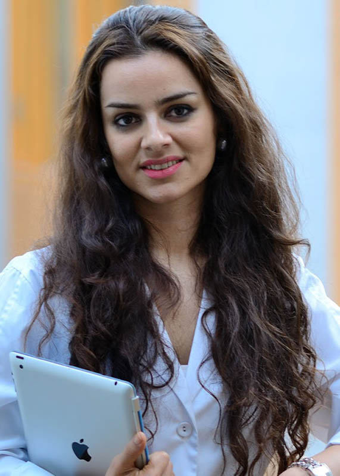
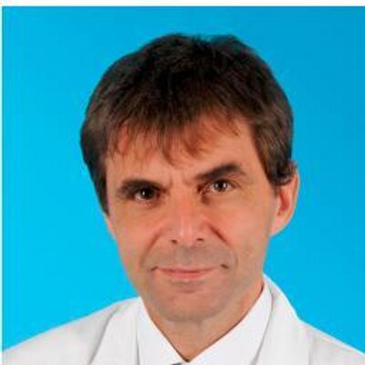

[ Introduction | Invited Speakers | Important Dates | Paper Submission | Datasets | Program Schedule | Organizers ]
06/17/2021: Panel information posted
06/15/2021: Videos and slides of paper presentations posted
06/11/2021: Open-access workshop proceedings available
04/03/2021: Program
schedule posted
Sixth
ISIC Skin Image Analysis Workshop
@ CVPR 2021 Virtual
Hosted by the International Skin Imaging Collaboration (ISIC)
Introduction
Skin is the largest organ of the human body, and is the first area of a patient assessed by clinical staff. The skin delivers numerous insights into a patient’s underlying health: for example, pale or blue skin suggests respiratory issues, unusually yellowish skin can signal hepatic issues, or certain rashes can be indicative of autoimmune issues. In addition, dermatological complaints are also among the most prevalent in primary care (Lowell et al., 2001). Images of the skin are the most easily captured form of medical image in healthcare, and the domain shares qualities to standard computer vision datasets, serving as a natural bridge between standard computer vision tasks and medical applications. However, significant and unique challenges still exist in this domain. For example, there is remarkable visual similarity across disease conditions, and compared to other medical imaging domains, varying genetics, disease states, imaging equipment, and imaging conditions can significantly change the appearance of the skin, making localization and classification in this domain unsolved tasks.
This workshop will serve as a venue to facilitate advancements and knowledge dissemination in the field of skin image analysis, raising awareness and interest for these socially valuable tasks. Invited speakers include major influencers in computer vision and skin imaging, and authors of accepted papers.
Lowell et al. “Dermatology in Primary Care: Prevalence and Patient Disposition,” Journal of the American Academy of Dermatology, vol. 45, no. 2, pp. 250–255, 2001.
Topics of interest include:
- Computer Vision in Dermatology and Primary Care
- Few‐Shot Learning for Dermatological Conditions
- Skin Analysis from Dermoscopic Images
- Skin Analysis from Clinical Photographs
- Skin Analysis from Video
- Skin Analysis from Total‐Body Photography and 3D Skin Reconstructions
- Skin Analysis from Confocal Microscopy
- Skin Analysis from Optical Coherence Tomography (OCT)
- Skin Analysis from Histopathological Images
- Skin Analysis from Multi‐Modal Data Sources
- Explainable Artificial Intelligence (XAI) Related to Skin Image Analysis
- Algorithms to Mitigate Class Imbalance
- Uncertainty Estimation Related to Skin Image Analysis
- Application Workflows for Skin Image Analysis
- Robustness to Bias from Clinical and User‐Originating Photography
- Best Paper Award: USD 4,000
- Honorable Mention Award: USD 2,000
Invited Speakers
The workshop will feature several prominent names in the field of skin image analysis, including:
|
|
Dr. Avila is an Assistant Professor in the Institute of Computing at the University of Campinas (Unicamp), Brazil. She received her Ph.D. in Computer Science at the Sorbonne University (also known as Paris 6). Her research on skin image analysis—classification, synthesis, debiasing—has been recognized through several academic awards, including Google Research Awards for Latin America. |
|
 |
Dr. Sadeghi completed her Ph.D. in Computing Science at Simon Fraser University. In 2012, she co‐founded MetaOptima Technology. In 2016, she made the Business in Vancouver’s Forty Under 40 Awards List for her successful commercialization of MoleScope (a mobile dermoscope) and DermEngine (an intelligent dermatology platform). More recently, Dr. Sadeghi was appointed a member of the MITACS Research Council, was credited as one of BC’s most influential women in BC Business Magazine, and her company was listed as a “Ready to Rocket” business in the area of digital health. |
|
 |
Dr. Kittler is a Professor of Dermatology at the Medical University of Vienna. He has been working in the field of dermatoscopy for over 20 years, with research experience especially in early recognition of skin cancer and sequential imaging. He has published seminal papers in the field of digital dermatoscopy and artificial intelligence guided diagnostics. |
Important Dates
| March 17, 2021: | Workshop Paper Submission Deadline (23:59:59 EST) |
| March 31, 2021: | Author Notifications |
| April 19, 2021: | Camera-Ready Submission Deadline (23:59:59 EST) |
| June 19, 2021: | Workshop @ CVPR 2021 Virtual |
Paper Submission
For paper submissions, CVPR guidelines are followed. Accepted papers will be published in the CVPR Workshop Proceedings and archived in the IEEE Xplore digital library as well as on the CVF Open Access website.
Public Datasets for Skin Image Analysis Research
- Derm7pt: Over 2,000 dermoscopic and clinical images of skin lesions with 7-point checklist criteria and diagnostic category information.
- Dermofit Image Library: 1,300 clinical images of skin lesions with diagnostic category information and segmentation masks.
- Fitzpatrick 17k: 16,577 clinical images with skin condition labels and skin type labels based on the Fitzpatrick scoring system.
- ISIC 2018 / ISIC 2019 / ISIC 2020: The ISIC has organized the world’s largest repository of dermoscopic images of skin (157,000+ images, 69,000+ of which are publicly available) to support research and development of methods for segmentation, feature extraction, and classification. These datasets are snapshots used for the 2018, 2019, and 2020 ISIC melanoma detection challenges. See also the HAM10000 and BCN20000 datasets.
- MED-NODE: 170 clinical images of skin lesions with diagnostic category information.
- PAD-UFES-20: Over 2,200 clinical images of skin lesions with associated metadata.
- PH2: 200 dermoscopic images of melanocytic lesions with detailed annotation.
- SD-128 / SD-198 / SD-260: 6,584 clinical photographs covering 128/198/260 distinct skin disorders with associated metadata.
Program Schedule
Saturday, June 19th, 12:00-17:15 CST, WWW
| 12:00: | Opening Remarks (M. Emre Celebi) [Video] |
| 12:12: | Invited Talk 1: The Quest for Reliable Melanoma Detection: 7 Years at the Vanguard of Skin Lesion Analysis (Sandra Avila) [Video] [Slides] |
| 12:42: | Invited Talk 2: Implementation of AI in Dermatology (Maryam Sadeghi) [Video] [Slides] |
| 13:12: | Invited Talk 3: The Importance of Domain Specific Knowledge (Harald Kittler) [Video: Teaser, Full] [Slides] |
| 13:42: | Break |
| 14:12: | Accepted Paper
Presentation Session
[Workshop Proceedings] Chairs: M. Emre Celebi, Catarina Barata, Allan Halpern, Philipp Tschandl, Marc Combalia, Yuan Liu
|
| 16:00: | Discussion
Panel (Live via Zoom) Moderators: M. Emre Celebi, Catarina Barata, Marc Combalia, Yuan Liu Panelists: Sandra Avila (UNICAMP, Brazil); Eduardo A. do Valle Junior (UNICAMP, Brazil); Costantino Grana (University of Modena and Reggio Emilia, Italy); Maryam Sadeghi (MetaOptima Technology, Canada); Philipp Tschandl (Medical University of Vienna, Austria); Alexander Wong (University of Waterloo, Canada) |
| 17:00: | Closing Remarks (Catarina Barata) |